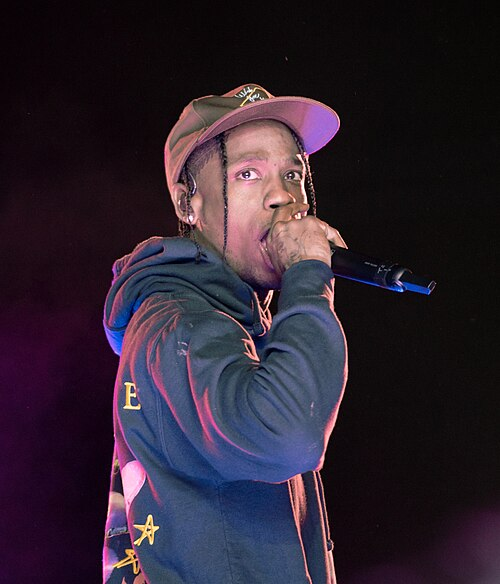

Biografía de Travis Scott

Nació el 30 de abril de 1991 en Houston, Texas. Creció en Missouri City, una zona suburbana de clase media que limita con el suroeste de Houston, vivió durante un tiempo con su abuela, pero luego se mudó a los suburbs, donde su padre tenía su propio negocio. Webster asistió a Elkins High School y se graduó a los diecisiete años. Luego asistió a la Universidad de Texas en San Antonio antes de abandonar en su segundo año de carrera para dedicarse por completo a su carrera musical.
Después de abandonar la universidad, se mudó inmediatamente a la ciudad de Nueva York en un intento de comenzar su carrera musical. Sus padres, frustrados por abandonar sus estudios, dejaron de ayudarlo económicamente pero después de un tiempo volvieron a ayudarlo.
En 2012 Scott firmó con la discográfica Epic Records y en noviembre del mismo año hizo un acuerdo con la compañía GOOD Music de Kanye West como parte de producción. En abril del 2013 firmó otro acuerdo con T.I y lanzó su primera maqueta. En agosto del 2014 hizo su segunda maqueta Days Before Rodeo poco después lanzó su primer álbum de estudio Rodeo con el sencillo "Antidote". Con su segundo álbum Birds in the Trap Sing McKnight (2016) ganó la primera posición en los Billboard 200. El año siguiente, lanzó un álbum colaborativo con Quavo, "Huncho Jack".
En 2019, lanzó "Astroworld" y gracias al sencillo "Sicko Mode" se posicionó en el Billboard Hot 100. En 2019 lanzó un nuevo álbum JACKBOYS con su discográfica Cactus Jack.
Ha citado que sus influencias son Kid Cudi, M.I.A., Kanye West, Toro y Moi, Tame Impala, T.I. y ASAP Rocky. La revista Spin comparó su mixtape de 2013 "Owl Pharaoh" con la de Kid Cudi, "Man on the Moon II: The Legend del Sr. Rager".
Comenzó a salir con la estrella de televisión y empresaria Kylie Jenner en abril de 2017. El 1 de febrero de 2018, Jenner dio a luz a su primera hija, Stormi. En agosto de 2021 se confirmó que la pareja estaba esperando su segundo hijo juntos. El 2 de febrero de 2022 nació su hijo, Aire.
Ha estado expuesto a varios escándalos, especialmente después de un fatal incidente ocurrido el 5 de noviembre de 2021 cuando 10 personas murieron aplastadas por la multitud durante su concierto en Houston.